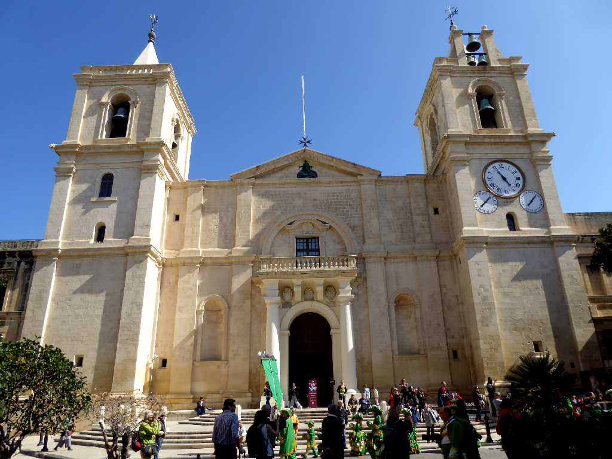
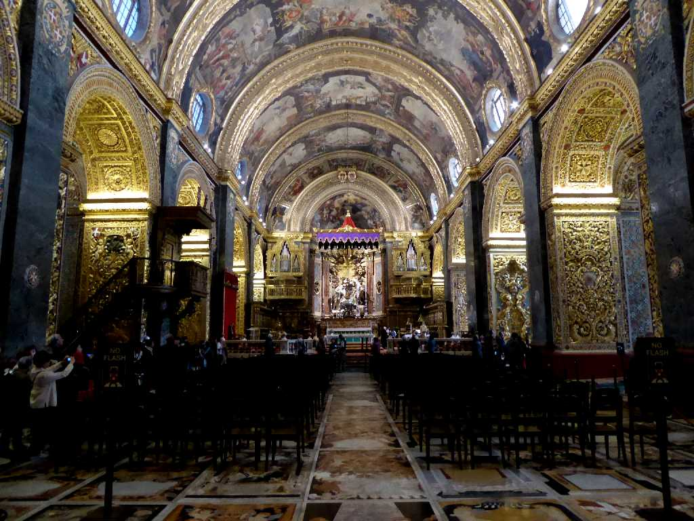
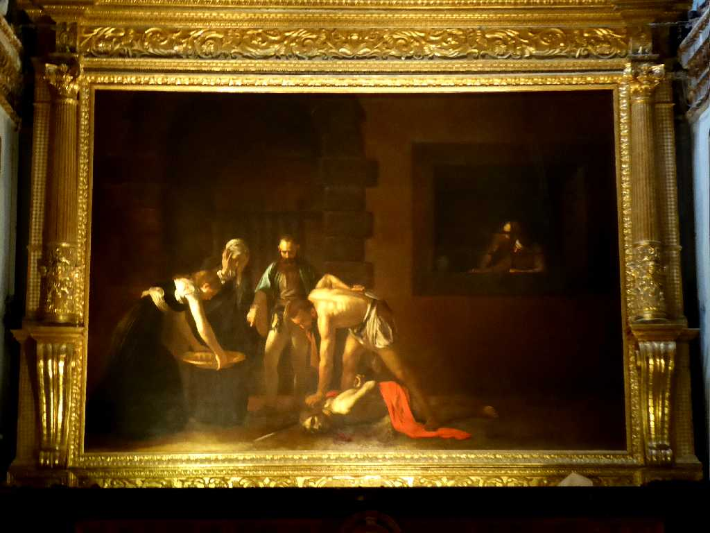
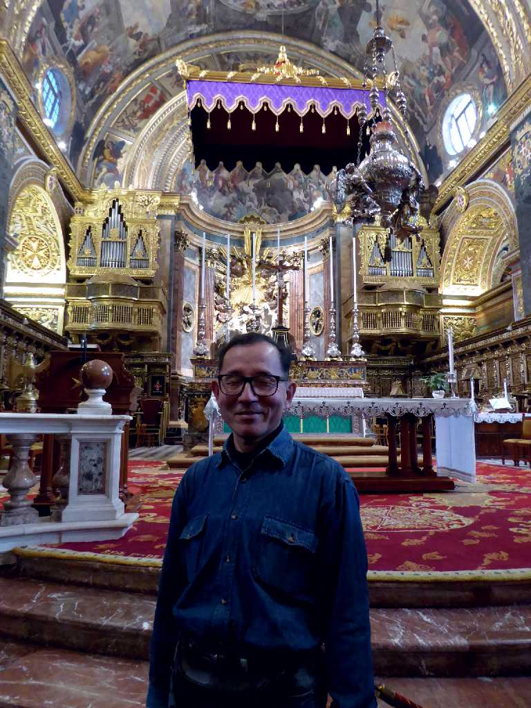

Kon-Katidral ta' San Ġwann Valletta
１５７８年に聖ヨハネ騎士団のちのマルタ騎士団によってマルタ島の石灰岩により創られた聖ヨハネ准司教座聖堂

Altar Kon-Katidral ta' San Ġwann
祭壇の両脇と天井に聖ヨハネの生涯を描いたバロック様式の内装

Decollazione del Battista 1608 Caravaggio Kon-Katidral ta' San Ġwann
騎士団のメンバーであるカラヴァッジオが１６０８年に描いた『洗礼者ヨハネの斬首』

March 4 2019 Kon-Katidral ta' San Ġwann